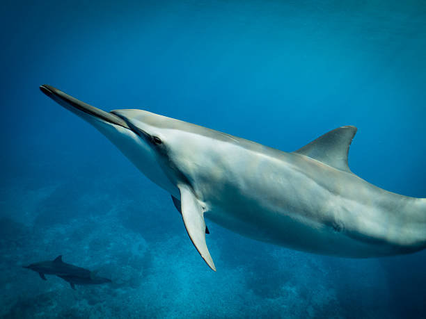
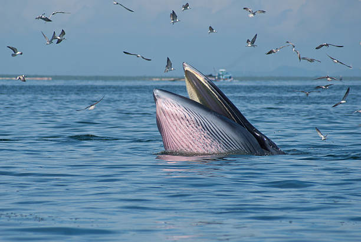
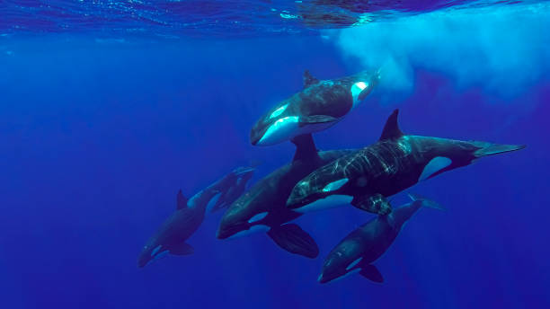
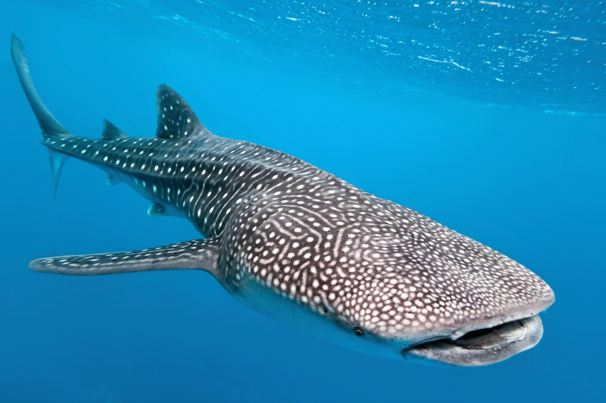
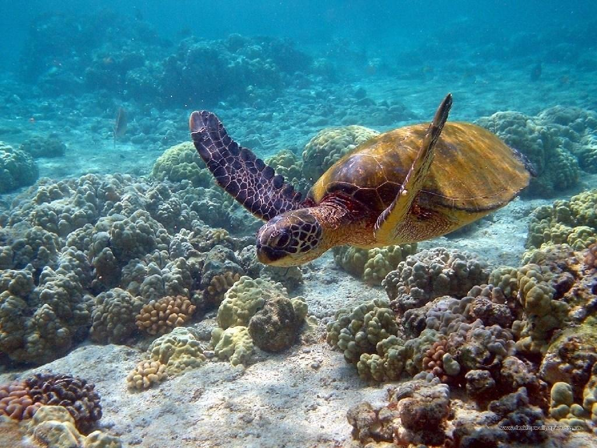

Insights, stories, and guides from our years on the water. Learn about the majestic creatures we encounter and how we work to protect them.
The blue whale (Balaenoptera musculus) is the largest animal on Earth, growing up to 30 meters and weighing over 200 tonnes. In Sri Lanka, they are a highlight of Mirissa (November–April) and Trincomalee (May–October) tours due to krill-rich waters.

Sperm whales (Physeter macrocephalus) are the second most common whales in Sri Lanka, frequently spotted off Mirissa and Trincomalee. They grow up to 20 meters and are known for their deep dives (up to 3 km) to hunt squid.

Spinner dolphins (Stenella longirostris) are a highlight of Sri Lanka’s whale watching tours, especially in Mirissa and Kalpitiya (November–April). Growing up to 2.7 meters, they are known for their acrobatic spins and large pods.

Bryde’s whales (Balaenoptera edeni) are slender baleen whales, reaching 15 meters. They are opportunistically sighted during Mirissa tours (November–April) while feeding on schooling fish like sardines.

Humpback whales (Megaptera novaeangliae) are known for their acrobatic breaches and long pectoral fins, growing up to 16 meters. They are occasionally seen off Mirissa and Kalpitiya (November–April), singing complex songs during migration.

Killer whales (Orcinus orca) are rare in Sri Lankan waters but occasionally spotted off Mirissa and Trincomalee. Growing up to 9 meters, these social predators are known for their black-and-white coloration and complex hunting strategies.

Whale sharks (Rhincodon typus) are gentle giants, growing up to 12 meters, and are the largest fish in the ocean. They are occasionally spotted off Sri Lanka’s southern coast, particularly near Mirissa and Galle (November–April).

Sea turtles, including green turtles (Chelonia mydas) and hawksbill turtles (Eretmochelys imbricata), are frequently seen in Sri Lanka’s coastal waters near Mirissa and Rekawa. They grow up to 1.5 meters and are vital to marine ecosystems.

Whale watching in Sri Lanka is thrilling, but unsustainable practices harm cetaceans. Issues include ship strikes, noise pollution, and overcrowding.
Mirissa Jetliner is committed to conservation by:
Maximize your whale watching experience in Sri Lanka with these essential tips:
Ready to witness these magnificent creatures in their natural habitat? Our tours fill up fast, especially during peak season. Secure your spot today for an unforgettable journey.
See Prices & Book